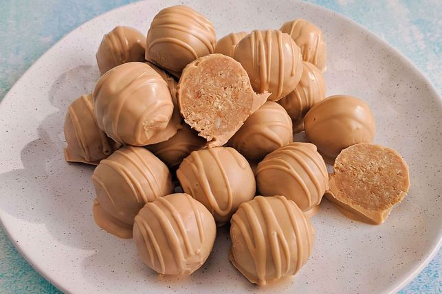

Caramilk Truffles
These easy Caramilk truffles are made with condensed milk and will be gobbled up in no time! If you have a little melted chocolate leftover after coating your truffles, simply drizzle it over them with a fork.
Ingredients
- 250g pkt Malt ‘O’ Milk biscuits
- 50g (1/2 cup) flaked almonds, toasted
- 3 x 180g blocks Cadbury Caramilk chocolate, chopped
- 395g can sweetened condensed milk
- 45g (1/2 cup) desiccated coconut
Steps
- Step 1
Place biscuits and almonds in a food processor and process until fine crumbs form. Transfer to a large bowl.
- Step 2
Place one 180g block of Caramilk chocolate in a microwave-safe bowl. Microwave on Medium, stirring every minute with a metal spoon, for 2-3 minutes or until melted and smooth. Add the melted chocolate, condensed milk and coconut to the biscuit mixture. Stir until well combined.
- Step 3
Line a baking tray with baking paper. Roll 2 teaspoonfuls of the biscuit mixture into a ball. Transfer to prepared tray. Repeat with remaining biscuit mixture. Place in the freezer until firm.
- Step 4
Place the remaining chocolate in a microwave-safe bowl. Microwave on Medium, stirring every minute with a metal spoon, for 2-3 minutes or until melted and smooth. Use a fork to dip balls in melted chocolate, allowing excess to drip off. Return to the tray. Place in the fridge until set. Serve.